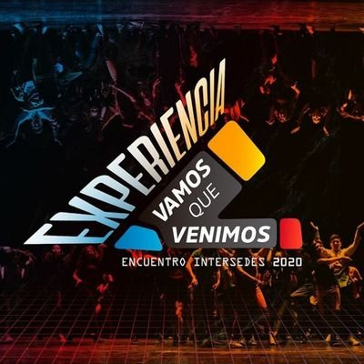
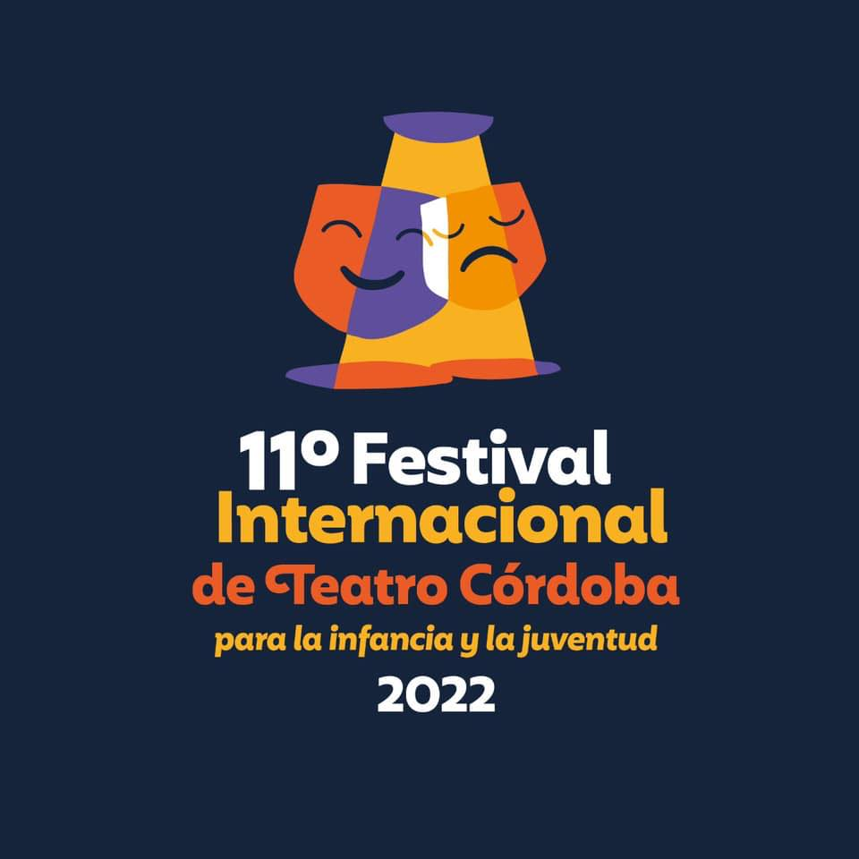

VAMOS QUE VENIMOS
Una propuesta cultural y educativa donde adolescentes de diversos lugares expresan su realidad sociocultural. Un espacio totalmente gratuito para a un sector de la población que se encontraba invisibilizado se brinda desde hace más de 12 años y logra alzar la voz de cientos de adolescentes. En el festival se encontrarán representaciones teatrales, intercambios culturales, talleres de formación actoral y debates.
FITC
La idea curatorial de este Festival Internacional se basa en los siguientes ejes temáticos: la Itinerancia, el festival se realiza en distintos espacios, ciudades y escenarios de nuestra provincia para poner en relieve la interacción y convivencia de intervenciones; el vínculo intergeneracional, donde abuelos y nietos unidos en un espacio común, comparten y disfrutan de intercambiar vivencias y risas; contribuir a través de las artes escénicas en favor de los derechos; y la inclusión y diversidad a través de la presencia del elenco Desafiarte y Crianzas, el musical.
TEATRO ITINERANTE

Organizado por la Agencia Córdoba Cultura junto al Colectivo Itinerantes, CEA Punilla y la Red de Salas de teatro independiente de Córdoba, con el apoyo del Consejo Federal de Inversiones (CFI); el programa Teatro itinerante de verano, que comenzó en el mes de diciembre con la apertura de la temporada estival, continúa el recorrido durante enero y febrero. El programa comprende una programación variada y extensa de espectáculos teatrales destinada a una gran diversidad de públicos con entrada libre y gratuita, que se desarrolla en escuelas públicas, escuelas rurales, centros comunales, jardines, plazas, salones parroquiales, bibliotecas, centros penitenciarios, hospitales, merenderos y salas de teatro independientes. Con un recorrido previsto de más de 6.000 kilómetros, la programación establecida abarca un total de 180 funciones a cargo de casi 120 grupos y elencos de las artes escénicas que visitarán 80 ciudades ubicadas en 20 departamentos de la provincia.